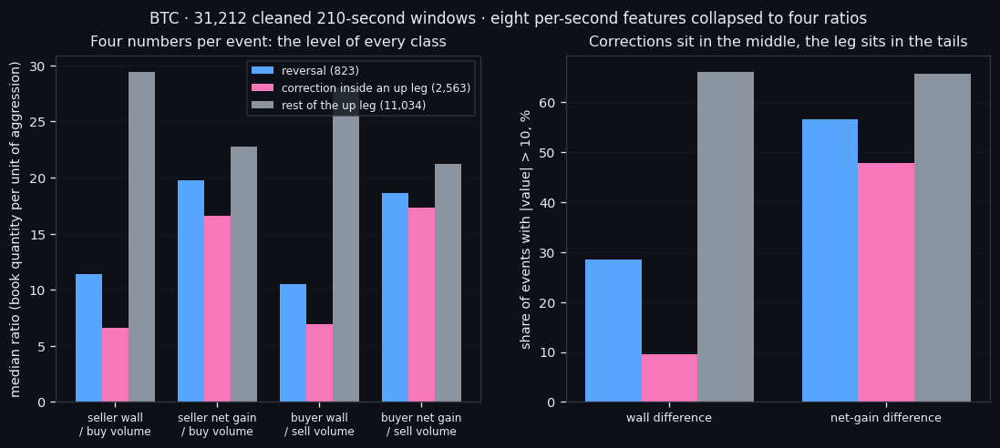
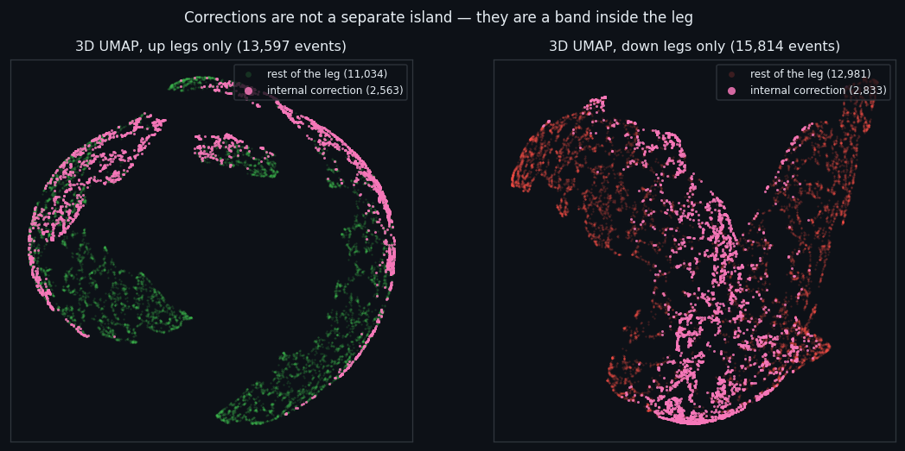
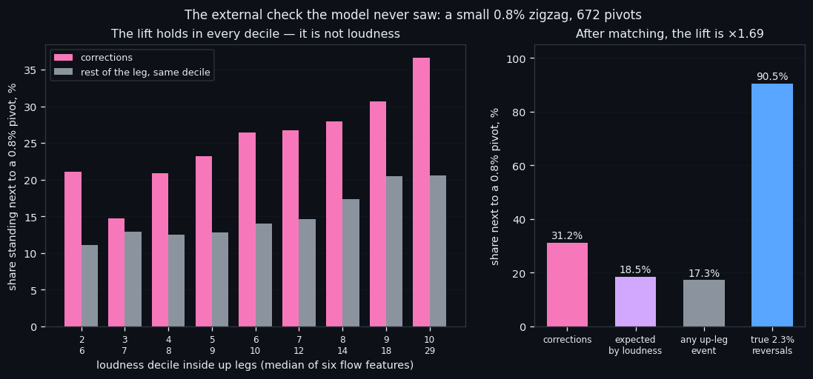
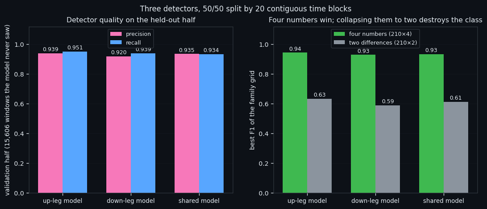

A Detector for Corrections Inside a Move — and Why It Took a New Way of Measuring
In shortWe stopped measuring how loud the order book is and started measuring how much wall stands per unit of aggression — eight features collapsed into four ratios. On that new scale a class appears that we could not see before: corrections inside a move, 5,396 of them, events that already look like a reversal without being one. Three detectors find them at 0.94 precision on a held-out half, and an external 0.8% zigzag confirms the class survives after loudness is matched away (×1.69). For a bot, that is the difference between holding a trend and being shaken out of it.
Narrated walkthrough · plays from YouTube when you press play.
① Eight features become four ratios
Every measurement system we built before this one asked the same question — how loud is the market right now — and every one of them ran into the same ceiling. A single number, the average level of six flow features, matched a convolutional network reading all 1,680 raw numbers of a window. Loudness was not one signal among many. It was the whole model.
So this line changed what a window is. A 210-second event used to be a matrix of 210×8 raw numbers. Now it collapses in two steps:
Step one — eight averages. For each of the eight order-book features, sum the 210 seconds and divide by 210. One number per feature per event.
Step two — four ratios. Each side of the book is divided by the aggression that hits it. The seller's wall and the seller's net gain are divided by buy volume; the buyer's wall and the buyer's net gain are divided by sell volume:
| number | what it measures |
|---|---|
const_resist / vol_buy | how much seller wall stands per unit of buying |
(resist_plus − resist_minus) / vol_buy | how much seller wall is gained per unit of buying |
const_support / vol_sell | how much buyer wall stands per unit of selling |
(support_plus − support_minus) / vol_sell | how much buyer wall is gained per unit of selling |
Eight numbers to four, and the four are no longer measures of volume. They are measures of resistance per unit of pressure — a ratio, so a quiet minute and a violent minute are directly comparable. That is the whole trick, and it is the reason everything below works.
One rule about how these numbers are averaged, because it changes them by a factor of two. The ratio is computed inside each event first, and only then averaged over the class — every event weighs the same. Averaging the raw sums first and dividing afterwards weighs each event by its share of volume, and quiet windows, where the ratios are largest, almost vanish. On up legs the two conventions give 35.62 and 15.89 for the same set. We use the per-event one everywhere: the number in a table is exactly the centre of the cloud on the chart.
The dataset is the cleaned BTC set: 31,212 windows of 56,263, 175 days, 14 Feb – 8 Aug 2026. Inside it: 823 reversal windows of a 2.3% zigzag, 13,597 windows inside up legs, 15,814 inside down legs. A / (B + 1e-8) is the transform above; the tab shows every intermediate table.

② The correction: a reversal that isn't one
A leg is a move of at least 2.3% in one direction. Inside it the price does not travel in a straight line — it stalls, pulls back, and continues. Those pauses are where a trading bot loses money: a stop gets hit, a position is closed, and the move resumes without you.
So we asked the four numbers a narrow question: which events inside a leg already look like a reversal, without being one? The similarity is scored by a logistic regression trained on «reversal versus everything else», measured strictly out of fold — five contiguous time blocks with a 30-minute embargo, because a 210-second window is very close to its neighbour and without the embargo the model reads the answer off it. Out-of-fold AUC 0.7474. The threshold is the median score of the true reversals: a correction is an event that, in book terms, looks no worse than half of the real turns.
That yields 2,563 corrections inside up legs (18.9%) and 2,833 inside down legs (17.9%).
They are not a weaker version of a reversal. They overshoot it, in the same direction:
| number (median) | reversal | correction | rest of the up leg |
|---|---|---|---|
| seller wall / buy volume | 11.40 | 6.64 | 29.45 |
| buyer wall / sell volume | 10.54 | 6.89 | 28.08 |
| wall difference (buyers − sellers) | -0.31 | 0.36 | -1.23 |
The rest of the leg carries a thick wall per unit of aggression — 29.4 against 6.6 in a correction. The reversal sits between them. Read plainly: during a correction the walls thin out relative to the pressure hitting them, exactly as they do at a real turn, only more so.
The three-dimensional map of a leg shows the same thing without any labels in the input: corrections occupy a continuous band of the cloud rather than a separate island. That is the honest shape of this class — a region, not a lump.

③ Matched for loudness, checked from outside
Every claim in this project has to survive the same two questions: *is it just loudness*, and does anything outside the model agree. Corrections are louder than reversals — median volume 0.514 against 0.395 — so the first question is not optional.
Loudness matched. Split the up-leg events into ten deciles of loudness (the sum of six flow features) and compare a correction only against the rest of its own decile. The external check is a small 0.8% zigzag, 672 pivots, which the model never saw: does the event stand within ±14 minutes of a small local turn?
- corrections next to a small pivot: 31.2%
- expected if they behaved like their own decile: 18.5%
- lift after matching: ×1.69
- loudness on its own predicts nearness with AUC 0.597
The lift holds at 1.5–1.9 in nine deciles out of ten. For scale, true 2.3% reversals stand next to a small pivot 90.5% of the time — the check works.
Not a tail, a band. Replace each number by its rank inside the leg — a monotone transform, order untouched — and the separation disappears: mean rank 0.519 / 0.523 for corrections against 0.495 / 0.495 for the rest. The reason is in the tails: only 9.6% of corrections have a wall difference beyond ±10, against 66.2% of the rest of the leg. The leg lives in both tails; the correction lives in the middle. No «greater than» threshold can catch that, which is precisely why a model is needed and why the earlier, cruder measurements missed it.
What we still cannot do. Telling a real 2.3% reversal from a correction is a separate, much harder problem: AUC 0.670 on the four numbers against a shuffled-label null of 0.530, rising to 0.723 when loudness is added. Detecting *that something is happening* works. Deciding whether the move ends here does not, yet.

④ Three detectors, and what they are for
Three detectors: one for up legs, one for down legs, one shared. The split is 50/50 by time — 20 contiguous blocks, even blocks train (15,606 windows), odd blocks validate (15,606). Contiguous on purpose: a random split lets the neighbouring window leak the answer.
Two grids. The first picks the model family and the input class; the second tunes the winner's parameters while tracking the epoch curve, and takes the best epoch before overfitting.
| model | precision | recall | signals | hits | targets | base rate |
|---|---|---|---|---|---|---|
| up leg | 0.939 | 0.951 | 1,352 | 1,270 | 1,336 | 20.3% |
| down leg | 0.920 | 0.939 | 1,349 | 1,241 | 1,322 | 17.2% |
| shared | 0.935 | 0.934 | 2,653 | 2,482 | 2,658 | 18.6% |
All three chose the same input: the four ratios. Collapsing them further into two differences drops the best F1 from 0.93 to 0.61 — the class survives the step from eight numbers to four and dies at the step from four to two. That is the sharpest measurement result of this line.
This looks like a breakthrough in detecting corrections, and it points at something practical: a bot that recognises a correction does not close a position into one. False exits are the cheapest money a trend-following system loses, and this is the first measurement we have that marks those moments while they happen, at 0.94 precision and 0.95 recall on data the model never saw.
Two honest limits, stated plainly. The label itself comes from a threshold on the same four numbers, so the high precision proves the detector reproduces the class cheaply and reliably — it does not prove the class exists on its own; the independent evidence for that is the ×1.69 lift of the previous section. And a correction signal does not mean the move will run further: after a signal a leg has 12.6 hours left on average against 16.2 for an ordinary leg event. It marks a mature move, not a fresh one.
Both limits become the next articles: an independent label, and the same detector on the five remaining coins. Everything in this series feeds one goal: an automated trading bot that reads the order book instead of the price. The measurement system — eight features to four ratios per unit of aggression — is what made this step possible, and it is the piece we carry forward.

Reproduce this study
All our bots have been tested live. The best one is Line 7.
More than a dozen bots were built from this research. Line 7 — two small transformers that read 160 hours of order book as one picture — is the only one ahead of buy & hold in live trading: +5.44% since 5 Oct while BTC moved −5.29%. Every trade is in the report.
Everything on this site is research, not financial advice.
How to read this site in 5 minutes · All studies as one .md for AI · All research
← All research